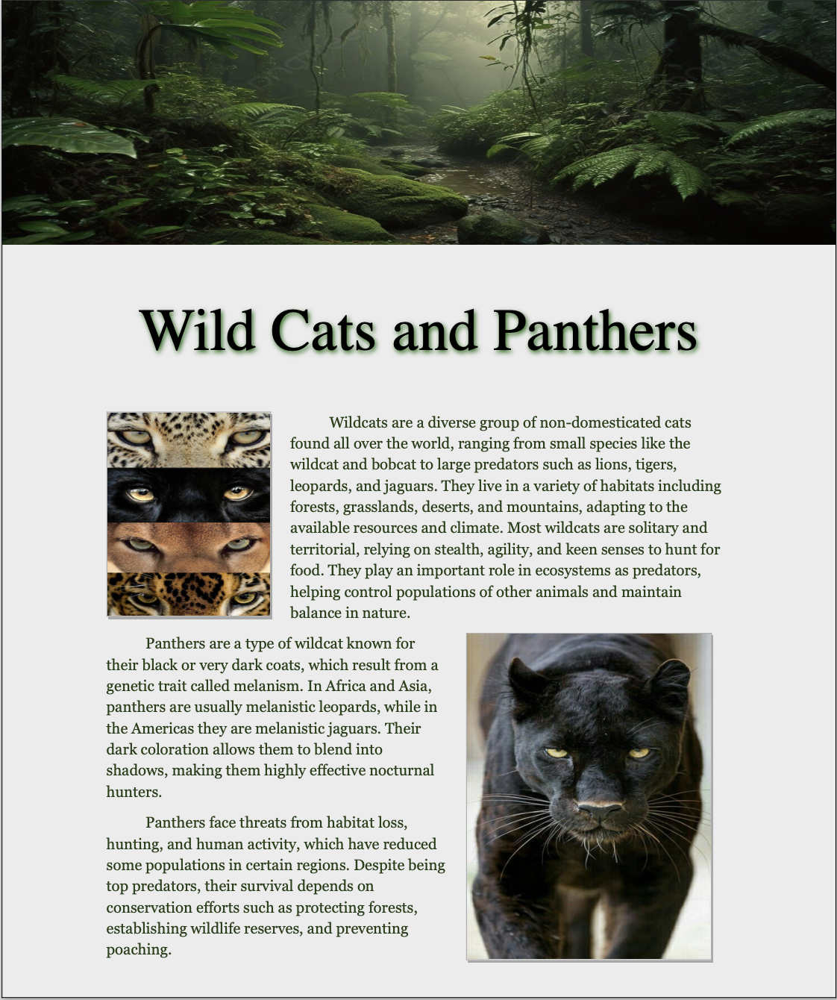
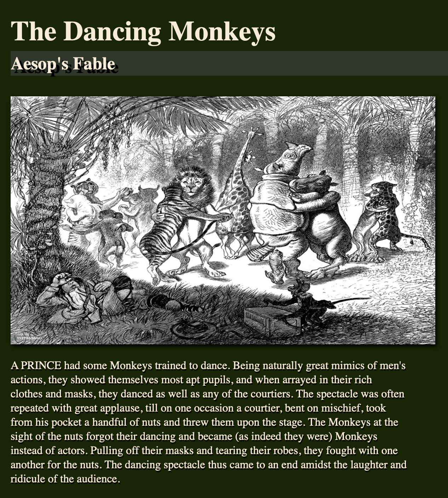

To create a simple web page with hypertext markup language (HTML) tags and cascading style sheet (CSS) styles that includes text and an image.

To create a type sample page to show fonts with one or more images